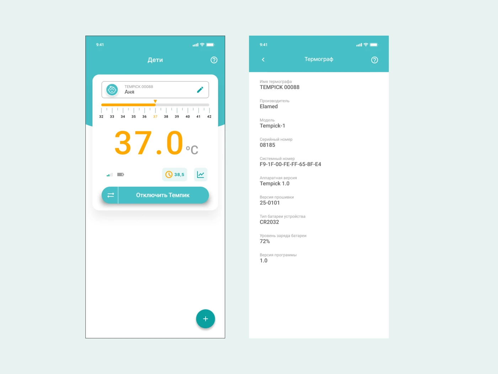
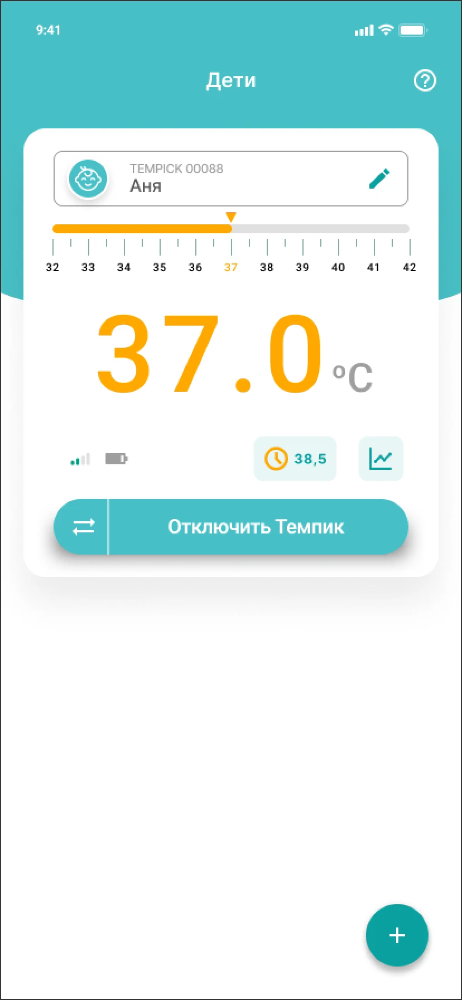
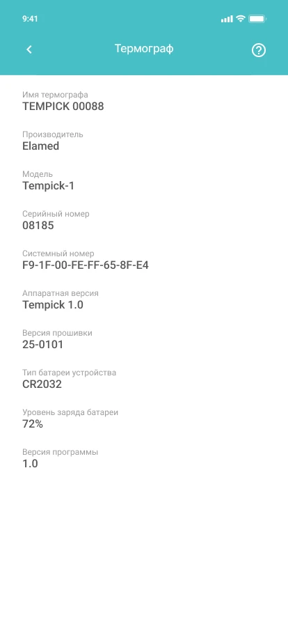

UX/UI Designer · Seven Winds Studio · Elamed
Tempick KIDS
Температура ребёнка в телефоне

Задача
Сделать показания Bluetooth-термометра понятными родителю. Связать температуру, профиль ребёнка, состояние устройства и уведомления.
Моя работа
Доработал мобильный интерфейс и UI Kit. Проработал профили детей, температурные графики и настройки оповещений.




Следующий проектВсе интерфейсы